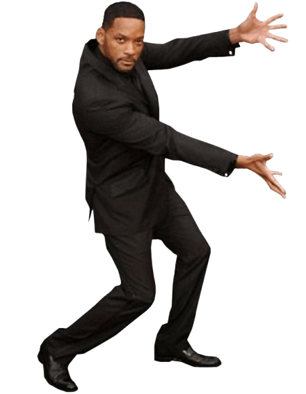
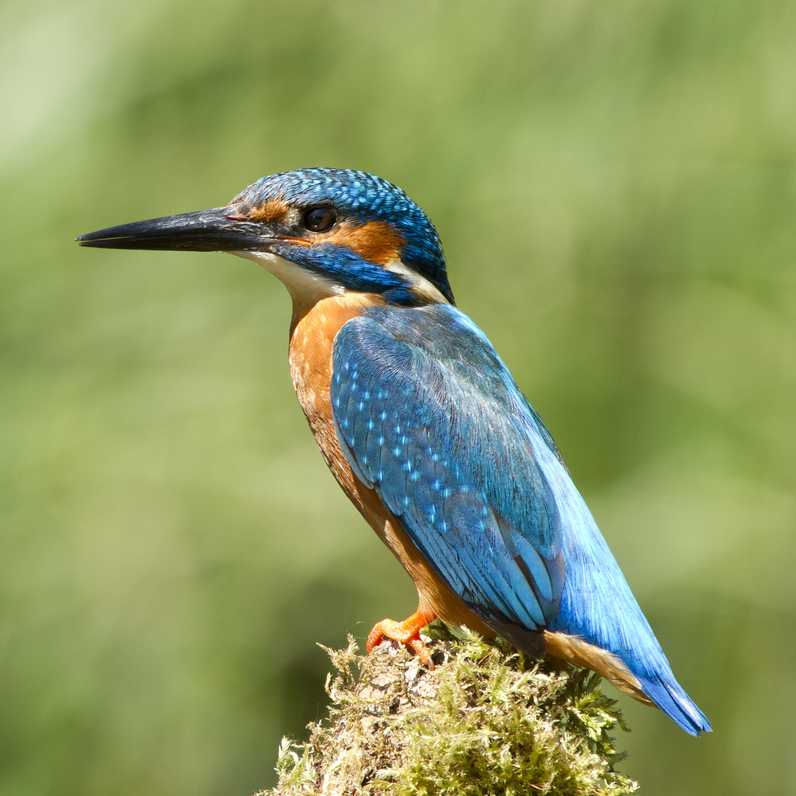
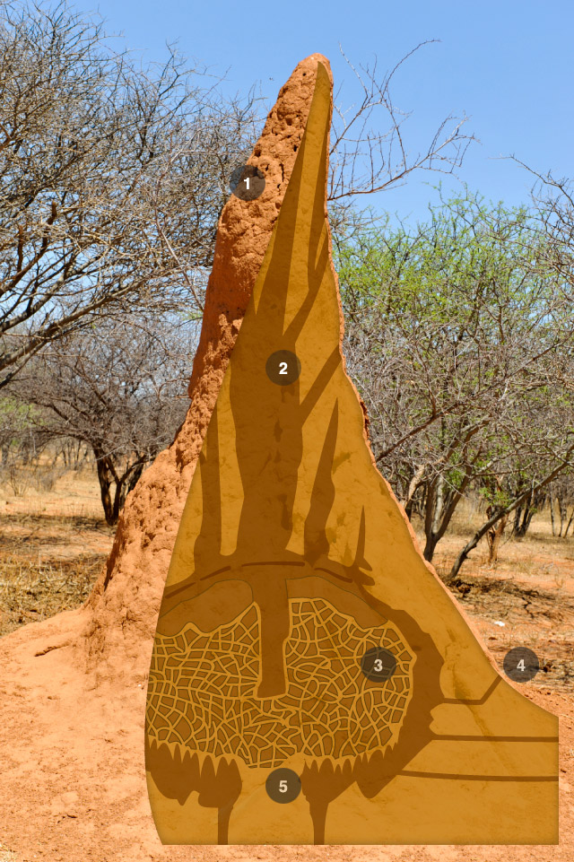
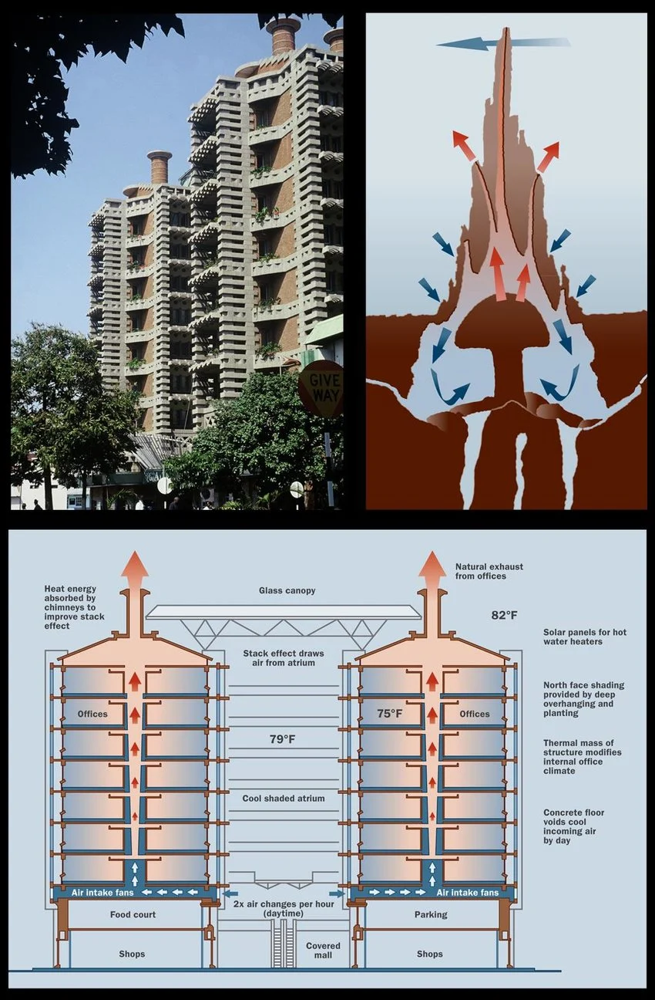
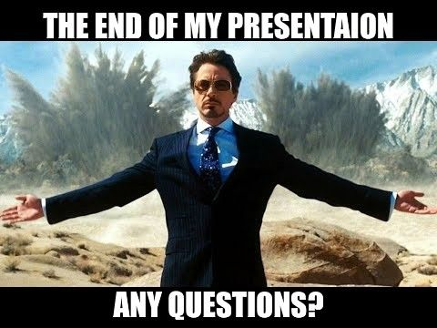

3.8 Billion Years
of Testing.
For two hundred years, industrial engineering relied on a simple principle: if a vehicle faces friction, build a bigger engine. If a building overheats, install larger compressors. If surfaces collect bacteria, spray them with chemicals. We spent centuries brute-forcing physics while overlooking how biological evolution solved those same constraints with minimal energy.

The Kingfisher and the Bullet Train.
In the 1990s, Japan’s 500-Series Shinkansen ran into a severe noise barrier. Entering narrow mountain tunnels at 300 km/h compressed the air ahead like a piston in a syringe, causing loud acoustic booms upon exit. General manager Eiji Nakatsu noticed that kingfishers dive from air into water with barely a ripple. Re-engineering the 15-meter nose cone after the bird's wedge-shaped beak smoothed out the pressure wave completely.

Diamond-Wedge Beak
Gradually parts water without pushing a sudden shockwave ahead of the body.
15-Meter Nose Cone
Replaces the old blunt dome to allow displaced tunnel air to disperse smoothly.
The Building That Breathes.
Harare experiences wide temperature swings, from cold nights to 35°C afternoons. Instead of installing central air conditioning chillers for a 31,000 m² development, architect Mick Pearce studied local termite mounds. Termites maintain their internal fungus farms at an even temperature by opening bottom vents at night and venting warm air out high chimneys. Applying this convective chimney flow to the Eastgate Centre kept offices comfortable year-round with a fraction of the power.

Convective Airflow
Warm air rises naturally out the top, drawing in cooler night air through the base.

48 Masonry Chimneys
Heavy concrete floors absorb heat by day; fans purge it out the roof at night.
The Physics of Clean Surfaces.
The lotus plant grows out of muddy water, yet its leaves stay clean without soaps or oils. In 1997, botanists Wilhelm Barthlott and Christoph Neinhuis found that this is caused by physical texture rather than artificial coatings: microscopic bumps covered in tiny waxy crystals.
Water droplets rest on tiny cushions of air trapped between these peaks, touching less than 1% of the actual solid surface. When the leaf tilts even slightly, droplets roll off like beads, carrying away dust and dirt particles.
Lotus Leaf Surface
Water beads roll off effortlessly, picking up surface dust without chemical cleansers.
The Sharkskin Approach.
Sharks swim in warm, microbe-dense waters, yet their skin stays free from algae and bacterial slime. In 2002, materials researcher Dr. Anthony Brennan found that shark skin is covered in tiny tooth-like scales called dermal denticles, arranged in precise diamond patterns.
This microscopic roughness makes it mechanically difficult for bacteria to attach and organize into biofilms. In hospital tests, replicating this pattern reduced bacterial colonization like E. coli and MRSA by 80–90% without drugs, avoiding the selective pressure that causes antibiotic resistance.

Dermal Scales
Fine diamond ridges create localized shear that prevents microbes from taking hold.
Physical Protection
Stops biofilm formation on hospital equipment without leaching antibiotics.
Raw Energy vs. Intelligent Geometry
| Problem | Traditional Industrial Fix | Evolutionary Design Solution | Result |
|---|---|---|---|
| High-Speed Drag High-Speed Rail |
More Power & Sound Walls Install larger track barriers, cut train speeds, and burn more electricity. |
Kingfisher Beak Geometry 15-meter tapered nose cone parts the air smoothly, silencing tunnel exit shockwaves. |
-30% Drag -15% Power |
| Indoor Cooling Office Buildings |
Continuous AC Compressors Run sealed glass towers with high-wattage refrigeration chillers round the clock. |
Termite Chimneys & Thermal Mass Concrete floors store night cool; natural convective flues vent day heat out the roof. |
-90% Energy $3.5M Saved |
| Dust & Dirt Building Facades & Solar |
Chemicals & Pressure Washers Frequent washing using chemical detergents, solvents, and municipal water. |
Lotus Micro-Bumps Microscopic waxy peaks trap air cushions so rainwater rolls off, carrying dust away. |
θc > 150° Zero Soaps |
| Bacterial Slime Clinical Surfaces |
Chemical Biocides Heavy metals and chemical disinfectants that risk breeding drug-resistant superbugs. |
Sharkskin Dermal Denticles 2-micron diamond riblets make it mechanically difficult for bacteria to attach. |
-85% MRSA Zero Drugs |
Nature Already Solved the Hardest Problems.
The next generation of engineering doesn't need to reinvent physics through sheer force. The working models are already built into every organism around us—we simply need to observe carefully and apply their geometry with restraint.
